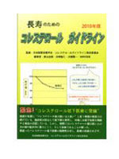

書評コーナー
季刊誌41号より
長寿のためのコレステロールガイドライン（2010年版）
■監修：日本脂質栄養学会・コレステロールガイドライン策定委員会
■編著者：奥山治美・浜崎智仁・大櫛陽一ほか策定委員/中日出版社 (2010/09)
■ISBN-10: 4885193583
■ISBN-13: 978-4885193583
■B5版 95頁 価格2380円（税別）
本書は新聞やテレビなどで紹介されたので、ご存じの読者もいるでしょう。
高脂血症の診断基準として、日本動脈硬化学会が提唱する総コレステロール220mg/dl以上が 長らく採用されてきましたが、2007年「動脈硬化性疾患予防ガイドライン」ではLDLコレステロール 140mg/dl以上が脂質異常の基準に導入されました。
学会ガイドラインの目的は動脈硬化による病気を減らすことだけですが、本書は「元気で長生き」を 目標にしています。この目標でいうと、総コレステロールやLDLコレステロールの値が高い人の方が長生きなのです。 これは『薬のチェック』がいつも強調していることです。
2010年10月には、日本医師会、日本医学会、日本動脈硬化学会が共同で記者会見を持ち、 本書を批判する声明を出しました。その理由は、ガイドラインでは、世界中で発表される臨床研究論文を 重要度のランク付けをして正しく評価し作成するべきだが、本書はそういうものではない、というものです。
しかし、本書がわざわざ「長寿のための」をタイトルに含めているように、 学会のガイドラインとは出発点が異なります。また、本書に書かれていることですが、 学会のガイドラインが根拠としている世界中の論文の大部分が製薬企業の資金で実施されたものであることも重要です。
長生きのためにはコレステロール値や食事への配慮についても解説されています。
診断基準や治療に関して、学会ガイドラインとはまったく異なる見解を示しているため、 その見解の根拠として、特に日本のデータ、製薬企業の影響のない資金による研究結果を示すことに 力点が置かれています。
コレステロールは低ければ低いほどよい、と医療関係者さえもが信じている現実を相手にするためには、 本書は大きな力になることでしょう。学会ガイドライン作成関係者の利益相反（製薬企業からの資金援助状況）を 指摘するとともに編著者の利益相反が明記されています。（み）